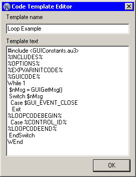

|
Unlike first few versions where only headers and footers were customizable, now Koda generate code from templates. This gave users full control over his code. Basically, code generator creates few independent code parts: includes, message loop code, events code, etc. When creating final code, special variables in templates are replaced with those parts, without touching any user code. This provides needed flexibility, while keep it simple. All your templates are kept into fd.xml configuration file and won't change or get lost on Koda's reinstallations and/or updates. |
 |
In this dialog you can change template name and template itself, where you can use following variables:
| %INCLUDES% | generate list of includes, depending on created controls. |
| %OPTIONS% | will be replaced with Opt() options. |
| %EXPVARINITCODE% | will be replaced with init code for variables, expanded from %VAR%. |
| %GUICODE% | will be replaced with GUI code. |
| %LOOPCODEBEGIN% | this pseudo-variable indicates where loop should begin. |
| %CONTROL_ID% | will be replaced with control ID. |
| %LOOPCODEEND% | this pseudo-variable indicates where loop should end. |
| %EVENTSCODEBEGIN% | this pseudo-variable indicates where event functions block should begin. |
| %EVENTNAME% | will be replaced with event name. |
| %EVENTSCODEEND% | this pseudo-variable indicates where event functions block should end. |